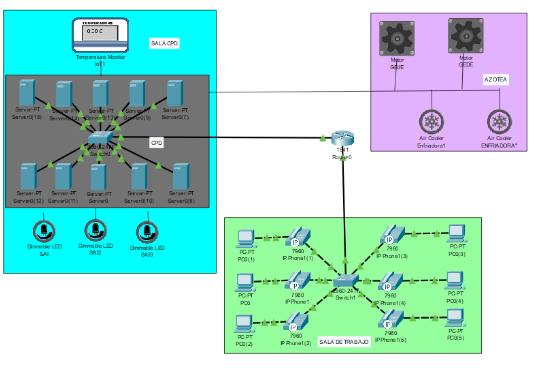

Mi empresa, RCS la Seguridad Bien, da a distintas empresas un servicio integral con el cual pueden alojar sus servidores en nuestro CPD sin tener que preocuparse de su mantenimiento, instalación, seguridad, etc. Además monitorizamos 24/7 el correcto funcionamiento de los servidores para poder tener una respuesta inmediata ante cualquier inconveniente evitando así las esperas y la posibilidad de que la incidencia produzca mayores consecuencias a la empresa cliente.
La empresa consta de una única sede compuesta por varias salas una de las salas y la más importante es la que aloja el CPD y los servidores la cual debe tener un doble suelo para pasar el cableado y evitar inundaciones, refrigeración constante y SAIs para evitar cortes de suministro eléctrico en caso de corte eléctrico. La otra sala es la sala desde la que se monitoriza con varios ordenadores y se intenta reparar las incidencias que no necesiten acción directa sobre el servidor. Además en la sede hay una azotea en la que se alojan las enfriadoras para la correcta refrigeración del CPD y grupos electrógenos para caso de apagones que los Sai no tengan que trabajar tanto.
El principal y más importante activo de mi empresa es el CPD donde alojamos los servidores de nuestros clientes. Por tanto, contamos con activos necesarios para su correcto funcionamiento, mantenimiento y sustentación como SAIs, enfriadoras y grupos electrógenos de emergencia. Para la monitorización contamos con otros activos como ordenadores con acceso a internet y herramientas de monitorización y dispositivos de telefonía para que los distintos grupos puedan comunicarse de manera más eficaz. También contamos con nuestra propia página web para que nuestros clientes puedan estar al tanto de nuestros servicios y ofertas además de herramientas de gestión para correo o comunicación escrita.
En la empresa hay 4 roles principales CEO → Dueño de la empresa Jefe de sección → Se encargan de las relaciones con los clientes y de aprobar o denegar las solicitudes de estos. Dentro de los jefes de sección hay dos tipos de puesto. Jefe de Operaciones: Se encarga de las solicitudes relacionadas con la instalación de equipos en el CPD. Jefe de sistemas: se encarga de las solicitudes relacionadas con la gestión de aplicaciones webs, backups… Técnicos → Su función es reparar las incidencias que tengamos a nuestro alcance reparar. Se dividen en: Técnicos de operaciones: reparan las incidencias relacionadas con el CPS. Técnicos de BBDD: reparan las incidencias relacionadas con las bases de datos. Técnicos de SSAA: reparan las incidencias relacionadas con las Aplicaciones 24/7 → Se encargan de monitorizar todos los equipos y escalar las incidencias al técnico específico que se encargue de solucionar la incidencia. Fuera de la empresa tenemos técnicos externos o técnicos de la empresa que es dueña del servidor en particular que se encargan de reparar las incidencias que no podemos reparar nosotros.
La normativa de seguridad en el puesto de trabajo consta de varias normas que deben conocer y seguir todos los empleados dentro de la empresa. 1 - Para acceder tanto a “la pecera”, al CPD como a la azotea se hará mediante una tarjeta de seguridad que tiene un número asociado al empleado evitando que puedan acceder personas no autorizadas a parte de dar acceso esta tarjeta también registra quién ha accedido y en qué momento para en caso de desperfecto saber quién ha sido. 2- Para poder acceder al ordenador, el empleado necesita un usuario y una contraseña segura, debe ser un combinación de caracteres especiales, letras y números la cual caduca cada 3 meses y deberá ser cambiada. A parte estas cuentas de dominio caducan anualmente a no ser que el responsable, nunca puede ser el mismo usuario, autoriza que siga trabajando en la empresa. 3- Cada vez que el empleado se levante de su puesto de trabajo, deberá cerrar sesión y en los equipos se configuran para que se cierre la sesión por inactividad. 4- Terminantemente prohibido conectar, usar o realizar cualquier actividad con dispositivos que no han sido dados por la empresa. 5-Nunca abrir correos electrónicos que procedan de gente externa a la empresa, en los correos oficiales nunca se enviarán links. 6 -No acceder a webs que no tengan certificados o se esté seguro de que no genera problemas. 7- No hablar de documentos o información con nadie externo a la empresa y destruir los documentos sensibles. 8- En caso de detectar cualquier fallo o problema de seguridad avisar al responsable.
El plan de concienciación en nuestra empres consta de varias etapas: La primera etapa es enseñar las medidas de seguridad mediante una charla para que aprendan de la mejor manera las medidas que deben tomar y tras esta charla cada empleado podrá realizar un autotest el cual deberán aprobar pero podrán repetirlo constantemente hasta que lo realicen correctamente. La segunda etapa es para recordar las medidas: La realización de cursos para que no se olviden de las medidas con las mismas evaluaciones que deberán aprobar. Charlas con expertos en seguridad. Juegos para ver cómo reaccionaría ante amenazas de seguridad. Carteles que se irán renovando continuamente para conseguir que los empleados se fijen en las medidas constantemente. Estas y otras medidas se irán alternando para una mejor concienciación y que los empleados no se aburran de siempre los mismo.
Copyright Ruben Latre Ak RCS